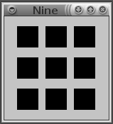
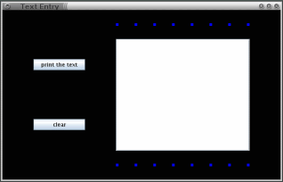
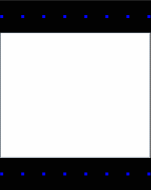
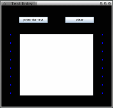
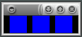
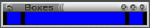

| context | - Slices & Suffixes - | author |
Slices:
Sliced windows may not be as life altering as sliced bread, but the technique of thinking in slices does give you, the programmer, better control over the layout of objects in your windows. Moreover, as I hope to show here, that better control extends over the lifetime of the window as the user resizes it.
I introduced slicing as a concept in
Tcl/Tk for
Programmers in 1998. At that time, slicing was useful but only in
planning your window layouts. Today, Java programmers can have API
support for slicing through the zio package described here. This
package is layered on top of Swing's BoxLayout layout manager. The
layering adds very little overhead and a lot of helpful structure.
First the concept. Consider the following window that contains nine squares.
|  |
You can organize the squares into rows. That gives you three rows, the entire window is sliced horizontally. The three rows fit into one column. Your window is organized into four slices, one column containing three rows. Or you can organize the squares into three columns and put the three columns into one row. Again, four slices with one containing the other three.
Finally, you can organize this window into a grid of nine squares. Although it is much easier to say "organize this window into a grid of nine squares" than to speak of four slices, grids are usually more difficult to work with than slices. The reason is that you usually find yourself coalescing some grid elements into one entity. Consider this example involving a text entry area with a couple buttons.
|  |
This window does not make a neat grid but it does slice quite easily: it was created as one row containing two columns. Something like this:
|  |
The left hand column contains two buttons. The right hand column contains three things of which the text area is only the largest. The two smaller things are again slices. They look like this
This example was created with a total of five slices, an outer row, two inside columns, and—within one of the columns—two innermost rows. Rows are horizontal slices, columns are vertical. There is no essential difference between the two: any description of a row is also a description of a column if you transpose the horizontal and vertical directions. If we transpose rows with columns in the above example we get
|  |
Expanding Slices:
The above windows look the same as the user expands the windows. They do not permit the user to shrink the windows to a point where they become useless. Achieving such behavior in Swing is often quite difficult. Making it easier was one of the goals behind the zio package.
Slicing is the key. Once you understand how a slice expands, you can build more complicated windows out of slices and understand them as well. This section will get you started. A newer feature, the gridded slice, is not explained here but enables rows and columns of a grid to behave in uniform ways. The next example of a row of boxes shows the normal way for a slice to expand.
|  |
Well, actually, that is one of two normal ways for a slice to expand. It is the kind of expansion you get when none of the objects in the slice expands. If one of the objects in the slice can expand in the direction of the slice, then the spaces remain rigid and the slice expands through its expanding objects something like this:
|  |
Normal expansion explains how the two innermost rows of boxes in the text entry example expand. It also explains how the leftmost column expands. It almost explains how the other two slices expand but not quite. The problem is that while a slice is mostly a one dimensional thing, it is not wholly a one dimensional thing. Before discussing the difference let's consider the zio package.
The zio Package:
This package consists of
Zio that contains some useful static methods,
Input and Output for text I/O,
InOut for whole file I/O. (The InOut class can handle
text or images.), and
The GUI classes are of three kinds
ZWindow class that creates windows, arranges for the
program to stop when the user closes the last window, and performs
other window-related tasks.
ZRow and ZCol
ZComponent class
that can bring Swing objects into the zio system.
See below in the section “Placing Swing Objects into ZComponents”.
The package has two levels of documentation basic for beginners and complete for the rest of us. The beginners' version of the documentation leaves out some methods and classes and also simplifies some of the explanations. It will get you started just fine. When you need more detail, switch to the complete documentation.
All the classes representing objects that appear on the screen are subclasses
of ZObject. So are the ZRow and ZCol classes. Any of these
things can be used in the zio package where a ZObject is required.
Putting ZObjects into ZRows and ZCols is the way you build
windows, slice by slice.
Here is a Java method that creates a row of squares as required above.
private static ZRow border(int n, Color boxColor) {
ZBox [] zpary = new ZBox [n];
for(int i=0; i<zpary.length; i+=1)
zpary[i] =
new ZBox().size(new Dimension(6,6)).color(boxColor);
return new ZRow( zpary ).atLeft().atRight();
}
This places n newly created ZBoxs into a newly created
ZRow. Along the way there are adjustments are made to the
ZBoxs and the ZRow as follows:
ZBoxs have their default size and color modified
with the two methods size() and color().
ZRow has its margins on the left and right removed
with the two methods atLeft() and atRight().
A method which makes such a modification is called a suffix.
By the way, the size and color adjustments require parameters of
type Dimension and Color.
A Dimension consists of a width and a height (both measure in
pixels) and a Color consists of three numbers given its red, green,
and blue content. (These two classes are from Java's API. You can read
about them at
Dimension
and
Color.)
Suffixes:
Suffixes are like adjectives that follow their nouns. The nouns
are ZObjects. The adjectives can come in any order. They
can appear with any occurence of the noun before the window
containing that ZObject is created. This rule is enforced
by zio's runtime system.
There are two places in the border method, where suffixes
are used:
new ZBox().size(new Dimension(6,6)).color(boxColor);
and
new ZRow( zpary ).atLeft().atRight();
The four suffixes: size(), color(), atLeft(),
and atRight() are rather self-explanatory as good adjectives
should be. Possibly atLeft() needs more
explanation: it says the leftmost object in the row should appear
at the very left of the row. Of course, atRight() is similar
but on the other side of the row.
These four suffixes define modifications to their ZObjects (a
ZBox in the first instance and a ZRow in the second) that
are carried out before the window containing the object is created.
The zio package has quite a few suffixes. Some of them like, size()
and color(), take parameters; some, like atLeft() and
atRight() do not. You can think of those suffixes that do take
parameters as giving me a way to add optional parameters to a
ZObject's constructor. You can think of those suffixes that do not
take parameters as a replacement for the flag parameters found in some
other contexts. (A common place where such constructors are used is in
opening files. Thinking in suffixes we would have readonly() and
writeonly() suffixes. Instead, what is common is to think in flags
and so have something like READ_ONLY and WRITE_ONLY static
final ints that must be or'd together.)
Suffixes, therefore, are a way of adding flexibility to constructors that cuts down the need for overloading and removes the need for flags. Not surprisingly, the zio package makes no use of flags and very little use of overloading.
One useful zio suffix that is available for all kinds of ZObjects is
debug(). You make up a name for the ZObject and pass
that name to debug(). When the window is created, the command window
will show some debug information about that object. For example,
new ZBox().debug("default box");
Will show you the default size and color of the box you have identified as “default box”.
Full Disclosure:
atLeft() and atRight() suffixes with atTop() and
atBottom() suffixes.
ZObjects because such objects are actually created when the
window containing them is created. For files, I have no such
mechansim. The zio package avoids the READ_ONLY and
WRITE_ONLY flags in a completely different and rather
uninteresting way.
Placing Swing Objects within ZObjects:
If you are a beginner, stop reading here, back up (or link to context), and look at the educational examples.
If you are an expert, some of the objects you place into a ZWindow will be normal Swing objects. This is because zio provides a
quite limited set of classes for screen objects. The value of zio
for you is primarily in layout management and only secondarily in the
simplicity of using classes like ZTextlines or ZKeyboard over
their Swing counterparts.
Let's continue the text entry
example by showing how to bring a Swing JComponent into the zio
system.
Note that this example was written before the zio package had a text
area or a button object. It is no longer necessary to import Swing
objects to use such things with zio. The example is still useful because
it shows you how to bring almost any Swing JComponent into the zio
package. Also, since it involves kinds of objects that exist both within
Swing and zio, you can use it to compare Swing's way of doing things
with zio's.
Here is code that creates a JTextArea object, puts that object into
a JScrollPane (so that it will have scrollbars when needed), and
puts that JScrollPane into a ZComponent. Roughly speaking, what is
happening is that we are converting a JTextArea into a ZObject.
JTextArea text = new JTextArea();
ZComponent textComponent = new ZComponent(
new JScrollPane( text )
).expandH().expandV().size( new Dimension(300,250) );
The newly created ZComponent is modified with suffixes that
override Swing's notion of its size and override zio's default rigid
size so that the underlying text area can expand in both horizontal and
vertical directions.
Before converting a JButton into a ZObject, we will create an
an easier-to-use subclass. Our style involves creating a separate subclass
for each button we need. Here is the subclass for a print button.
private static class PrintButton
extends JButton implements ActionListener {
private JTextArea text;
public PrintButton(JTextArea text) {
super("print the text");
this.text = text;
addActionListener(this);
}
public void actionPerformed(ActionEvent ignore) {
System.out.println(text.getText());
}
}
There are Swing details here that go beyond our current scope. In
English, this class defines a kind of button which responds to a
mouse click by printing the contents of a JTextarea
on the command window.
The constructor creates the button, makes
not of which JTextarea is involved, and arranges for Swing
to call the actionPerformed method when the mouse's left
button is clicked.
The actionPerformed method fetches the contents of the
JTextArea and prints it on the command window. Creating a
separate button class for every button allows us to ignore
the ActionEvent parameter that is passed to actionPerformed
by the Swing system when a button is clicked. Following a style
of object-oriented design advocated by Bertrand Meyer, it also
allows us to
unnecessary branching in our actionPerformed method.
Converting a PrintButton to a ZObject is easy
ZComponent show = new ZComponent( new PrintButton(text) );
The other button needed by this example can be created in the same way.
Two Dimensional Expansion of a Slice
You may have noticed that the textComponent object created
above expands in two directions but is to be placed into a ZCol
that normally expands only one direction. Suppose the placement
is done this way
new ZCol(
border(8,Color.BLUE), text, border(8,Color.BLUE)
);
This approach would create a fixed-width column. Even though all
objects in the column can expand horizontally, they would not be
permitted to do so. Well not much, the smaller ones would be
permitted to expand to the width of the largest one. Beyond that,
there would be no horizontal expansions. ZCols do not do
that unless you force them to.
To make a column capable of expanding horizontally, what is needed is
an additional suffix, unlock(). This suffix permits a slice
to expand in the direction it normally would not. It does not force a
slice to expand that direction. Expansion may happen only when the
slice contains a ZObject that can do the expanding. That, of course,
is exactly the case for the right hand column of the text entry example.
Here is the code that creates a text entry ZWindow and populates
it with the appropriate layout of ZObjects.
ZWindow w = new ZWindow(
"Text Entry",
new ZRow(
new ZCol( show, clear ),
new ZCol(
border(8,Color.BLUE),
textComponent,
border(8,Color.BLUE)
).unlock()
).unlock()
);
Notice that both the right hand column and the outer row are unlocked.
The Rest of the Story:
A later version of the zio package will make it easy to make a set of
buttons (or almost anything else) the same size. For now, it is a
bit of a hassle. What I did for this example was to run the program
without paying attention to button size but using a debug suffix
on each ZComponent containing a button. Then I knew the size
I wanted and used the size suffix to get it.
You are now ready to see the complete code for the text entry example and think about how the zio package might be useful in your own work. Find the code here.
I think the example demonstrates the simplicity of this way to do layout but I should mention a major limitation: the system only works on windows whose objects are not replaced during execution. I have ideas about how to overcome that limitation but may never get around to implementing them. If you have any ideas let me know. I do confess though that I will find your ideas a lot more interesting if you are willing to do most of the work to see that they are implemented.
A final word about my purpose in creating this package. My goals were
three: to have some classes useful in teaching, to have some classes
that I myself would like to work with, and to simplify the work of
making simple GUI's in Java. This mixture of goals shows in the
Textarea.java example. You do not see System.out.println
there. Instead you see Zio.show(). I did it that way simply so I
could tie necessary beginner things up in a neat package.
Although accessibility for beginners is still a primary motivation, I believe the zio package has developed to the point where it will be useful for many professional programmers whose work accepts the package's limitations. I tend to build rather robust software. Let me know of any bugs and I will get on to them as soon as possible. You can reach me at mmmyy@jazimmer.net where mmm is the current month in the form, jan,feb,mar,..., and yy is the last two digits of the year.
I have released the zio package and its documentation under the Open Software License, version 2.1.
| context | Jul 29, 2005 | author |